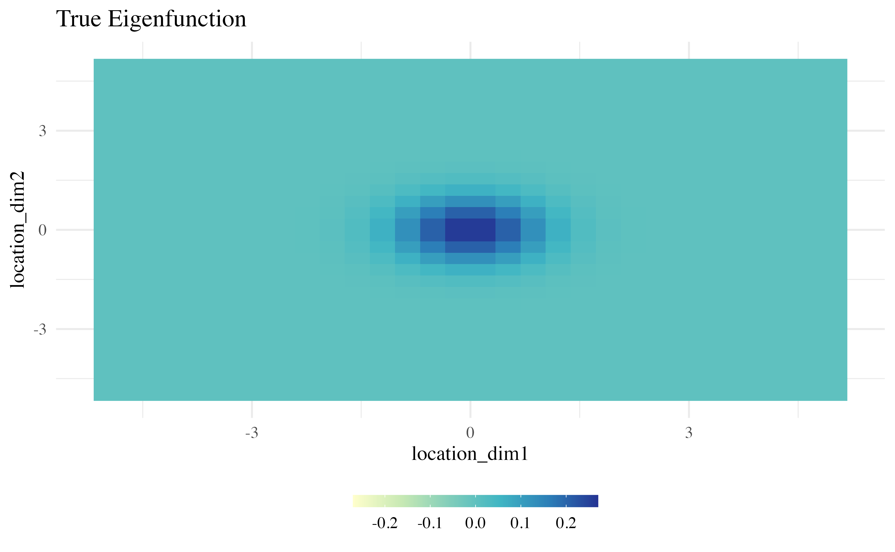
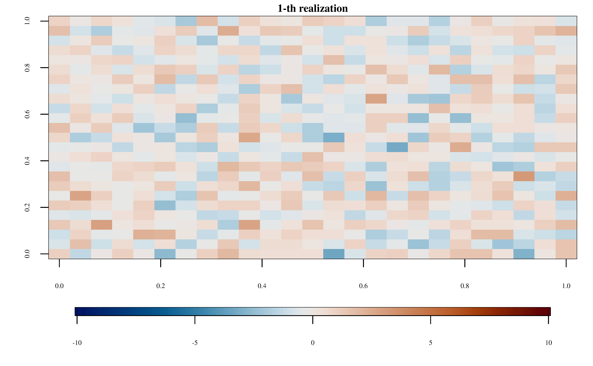

vignettes/demo-two-dim-location.Rmd
demo-two-dim-location.RmdRepresent how to use SpatPCA for two-dimensional data for capturing the most dominant spatial pattern
library(SpatPCA)
library(ggplot2)
library(dplyr)
library(tidyr)
library(gifski)
library(fields)
library(scico)
base_theme <- theme_minimal(base_size = 10, base_family = "Times") +
theme(legend.position = "bottom")
fill_bar <- guides(fill = guide_colourbar(
barwidth = 10,
barheight = 0.5,
label.position = "bottom")
)
coltab <- scico(128, palette = 'vik')
color_scale_limit <- c(-.28, .28)
set.seed(1024)
p <- 30
n <- 50
location <-
matrix(rep(seq(-5, 5, length = p), 2), nrow = p, ncol = 2)
expanded_location <- expand.grid(location[, 1], location[, 2])
unnormalized_eigen_fn <-
as.vector(exp(-location[, 1] ^ 2) %*% t(exp(-location[, 2] ^ 2)))
true_eigen_fn <-
unnormalized_eigen_fn / norm(t(unnormalized_eigen_fn), "F")
data.frame(
location_dim1 = expanded_location[, 1],
location_dim2 = expanded_location[, 2],
eigenfunction = true_eigen_fn
) %>%
ggplot(aes(location_dim1, location_dim2)) +
geom_tile(aes(fill = eigenfunction)) +
scale_fill_gradientn(colours = coltab, limits = color_scale_limit) +
base_theme +
labs(title = "True Eigenfunction", fill = "") +
fill_bar
for (i in 1:n) {
par(mar = c(3, 3, 1, 1), family = "Times")
image.plot(
matrix(realizations[i, ], p, p),
main = paste0(i, "-th realization"),
zlim = c(-10, 10),
col = coltab,
horizontal = TRUE,
cex.main = 0.8,
cex.axis = 0.5,
axis.args=list(cex.axis=0.5),
legend.width=0.5
)
}
SpatPCA::spatpca
We add a candidate set of tau2 to see how SpatPCA obtain a localized smoothe pattern.
The following figure shows that SpatPCA can find sparser pattern than PCA, which is close to the true pattern.
data.frame(
location_dim1 = expanded_location[, 1],
location_dim2 = expanded_location[, 2],
spatpca = eigen_est[, 1],
pca = svd(realizations)$v[, 1]) %>%
gather(estimate, eigenfunction, -c(location_dim1, location_dim2)) %>%
ggplot(aes(location_dim1, location_dim2)) +
geom_tile(aes(fill=eigenfunction)) +
scale_fill_gradientn(colours = coltab, limits = color_scale_limit) +
base_theme +
facet_wrap(.~estimate) +
labs(fill = "") +
fill_bar